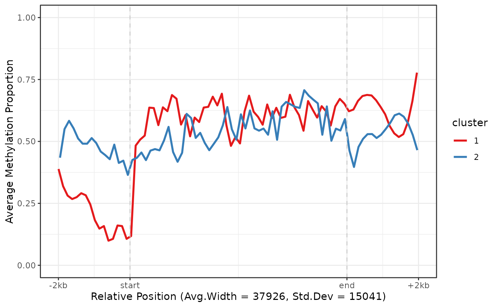

Cluster regions by k-means based on their methylation profiles. In order to cluster using k-means the methylation profile of each region is interpolated and sampled at fixed points. The first 10 principal components are used for the k-means clustering. The clustering is best behaved in regions of similar width and CpG density.
Usage
cluster_regions(x, regions, centers = 2, grid_method = c("density", "uniform"))Arguments
- x
the NanoMethResult object.
- regions
a table of regions containing at least columns chr, strand, start and end.
- centers
number of centers for k-means, identical to the number of output clusters.
- grid_method
the method for generating the sampling grid. The default option "density" attempts to create a grid with similar density as the data, "uniform" creates a grid of uniform density.
Examples
nmr <- load_example_nanomethresult()
#> Successfully matched 6 samples between data and annotation.
gene_anno <- exons_to_genes(NanoMethViz::exons(nmr))
# uniform grid due to low number of input features
gene_anno_clustered <- cluster_regions(nmr, gene_anno, centers = 2, grid_method = "uniform")
plot_agg_regions(nmr, gene_anno_clustered, group_col = "cluster")
